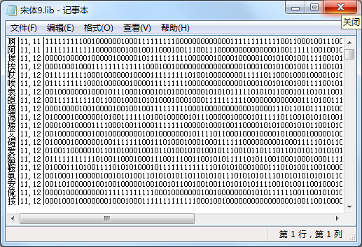

| 命令名称 | Lib_ShareUTF8 分享UTF8无BOM识别字库 |
| 命令功能 | 将已加载的识别字库重新生成一个新的UTF8无BOM字库文件（移动版专用） |
| 语法格式 | TURING.Lib_ShareUTF8(LibPath) |
| 参数说明 | 明 LibPath：字符串型，保存识别字库文件路径（后缀名：.lib8） |
| 返回值 | 无 |
| 按键精灵 |
复制代码
'【例子1】：
'加载识别字库
Call TURING.Lib_Load("C:\识别库.lib")
'分享UTF8无BOM识别字库文件（移动版专用）
Call TURING.Lib_ShareUTF8("C:\识别库.lib8")
'【例子2】：
'创建一个系统“宋体9号”字库
Call TURING.Lib_Create("宋体", 9)
'分享创建系统字体的UTF8无BOM识别字库文件（移动版专用）
Call TURING.Lib_ShareUTF8("C:\宋体9.lib8")
|
| 字库内容 |  |